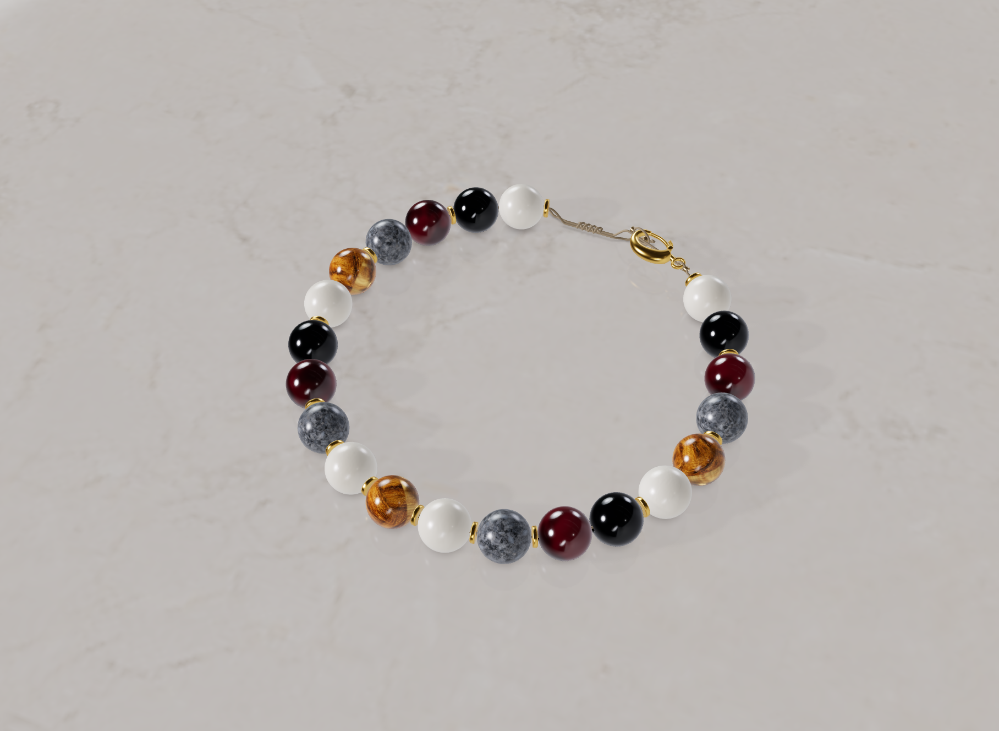
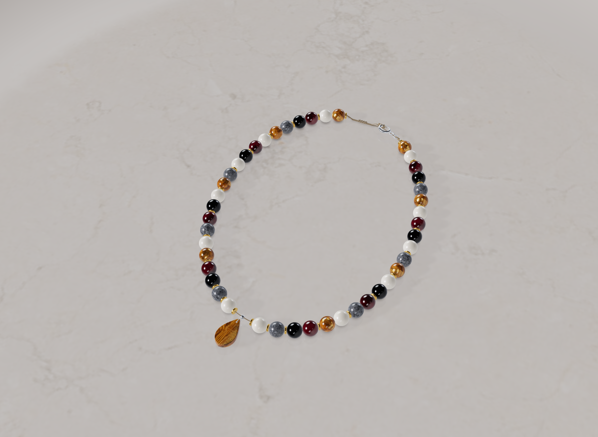
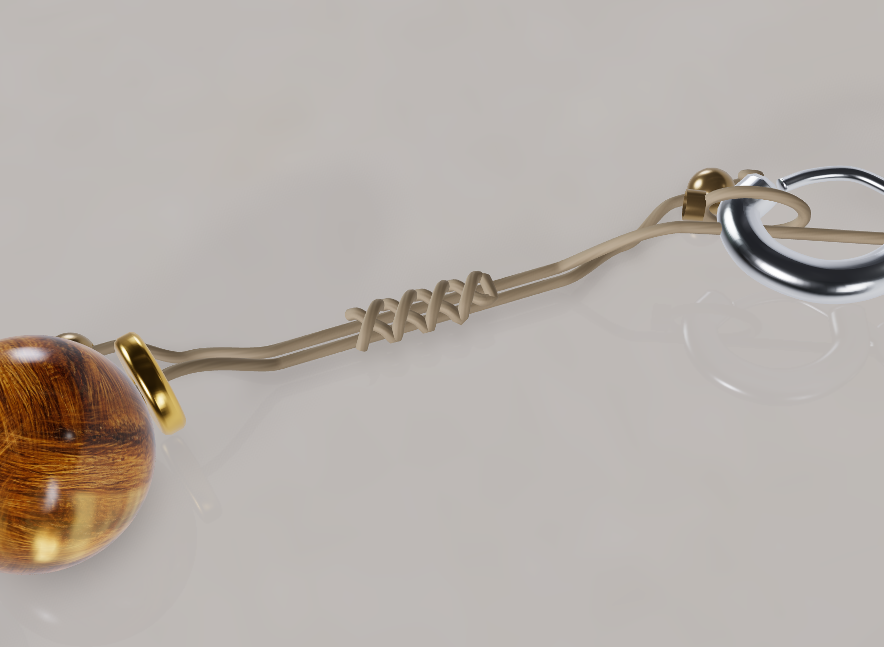
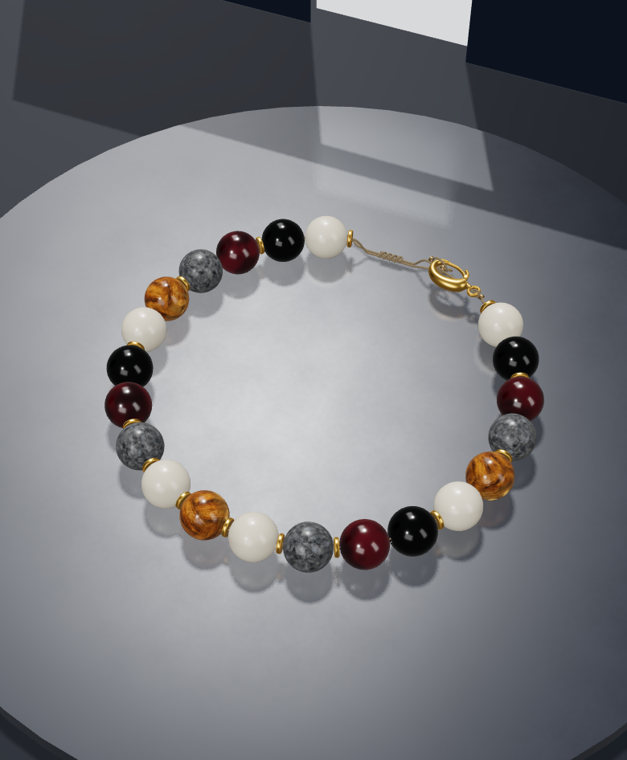
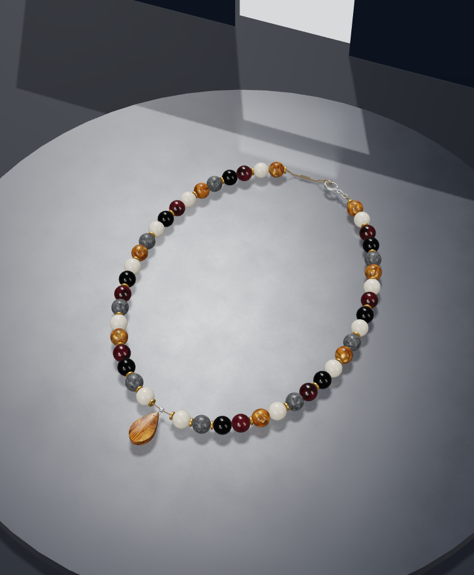
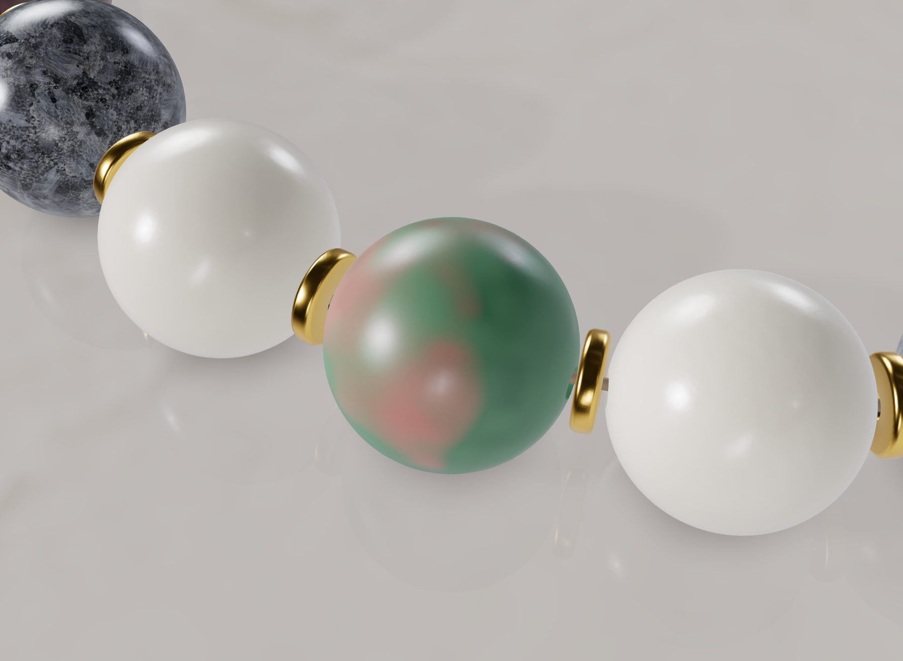
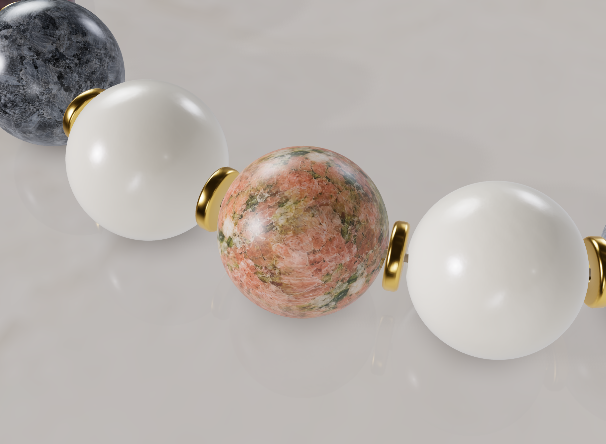

Atölyeden yeni görüntüler · 2 Kasım 2026
İpin ucunda yeni bir dokunuş.
Makrome kapama, bileklik ve kolyeye aynı taşıyıcı üzerinden bağlanıyor. Bu görüntüler çalışan 3D atölyeden alındı; tasarımdaki taşlar ve mevcut parçalar korunuyor.
Bileklik ve kolye



Mobil sahne


Unakit dokusu
Yeni çalışma, geniş renk alanlarına mineral tanecikleri ekliyor. Bu görünüm inceleme aşamasında; eski tasarımları değiştirmiyor.


Bunlar geliştirme önizlemeleridir. Fiziksel telefon ve üretim uygunluğu doğrulanmamıştır. Mevcut toka ve diğer parçalar otomatik silinmez.